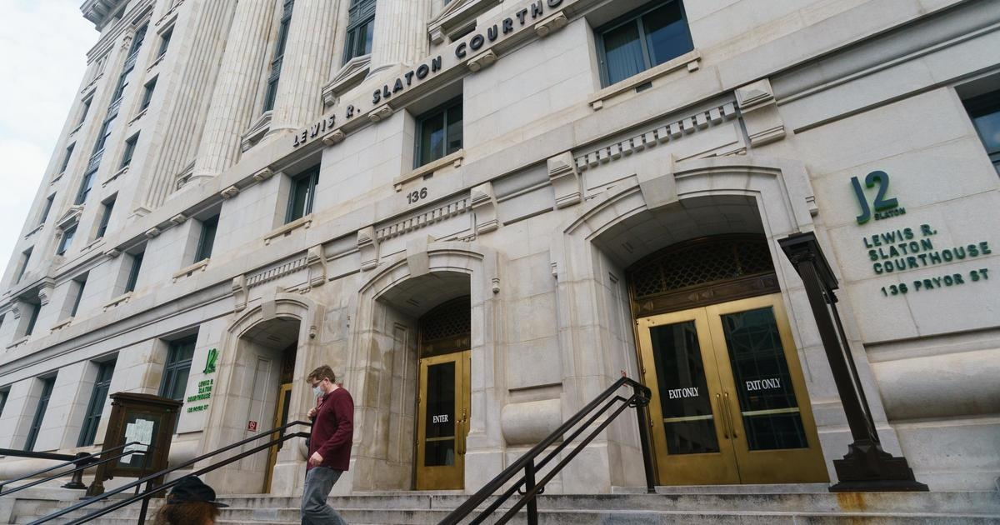

Grand jury to be chosen ahead of potential Georgia Trump indictmentA may soon consider charges against former President Donald Trump and allies who sought to overturn the state's 2020 presidential election results, which he lost. Fulton County District Attorney has indicated in letters to county officials that potential indictments in the case could come between July 31 and Aug. 18. Potential grand jurors were questioned for about two hours Tuesday before Fulton County Judge Robert McBurney announced who were chosen. There will be two concurrent 23-person grand juries, each with three alternates. One group will meet on Mondays and Tuesdays. The other will meet Thursdays and Fridays. Of the 23 Fulton County residents chosen for the grand jury, a majority, 12, would need to vote in favor of an indictment. The investigation began shortly after a recorded Jan. 2, 2021, between Trump and Georgia Secretary of State Brad Raffensperger was made public. In the call, , "I just want to find 11,780 votes" — the number he would have needed to overtake Joe Biden. The investigation ultimately developed into a sprawling probe of efforts to sway the election for Trump in the months after Mr. Biden's win. Over the course of six months in 2022, a special purpose grand jury — which had the power to issue subpoenas and produce a final report with indictment recommendations — interviewed 75 witnesses. In media interviews after the report was delivered to Willis' office, the special purpose grand jury's foreperson indicated multiple indictments were recommended. The special purpose grand jury did not call Trump, but it did interview his allies, including his former attorney Rudy Giuliani, Sen. Lindsey Graham, former White House chief of staff Mark Meadows, and political critics such as Raffensperger and Georgia Gov. Brian Kemp. In an interview with CBS News on Feb. 26, attorneys for Trump criticized the investigation. "We absolutely do not believe that our client did anything wrong, and if any indictments were to come down, those are faulty indictments. We will absolutely fight anything tooth and nail," said attorney Jennifer Little. Trump, a Republican who is running again for president, denies wrongdoing and has defended the Raffensperger call as "perfect." He has accused Willis, a Democrat who is the first Black woman to serve as Fulton County district attorney, of pursuing the investigation out of political animus and racism. It's a pair of accusations he also levied against Manhattan's first Black district attorney, Democrat . In April, to 34 felony falsification of business records charges brought by Bragg's office in connection with a "hush money" payment made to an adult film star days before the 2016 presidential election, which Trump won. That case made Trump the first former president in U.S. history to be charged with crimes. Trump also to related to alleged "willful retention" of top secret documents. He has accused the lead prosecutor in that case, special counsel Jack Smith, of political bias. That case is currently scheduled for trial on Aug. 14, but on Monday evening, Trump's attorneys for an indeterminate delay. They indicated they believe the trial should be held after the 2024 election. They also cited Trump's busy legal schedule. A trial in the Manhattan criminal case is scheduled for March 2023. A civil trial in another New York case, a $250 million lawsuit against Trump and his company over alleged widespread fraud, is scheduled to begin in October. That case was brought by New York Attorney General Letitia James, a Democrat who is the first Black woman to hold that office. Trump has denied the allegations and accused James of political bias and racism for bringing the case. for more features. |
 |